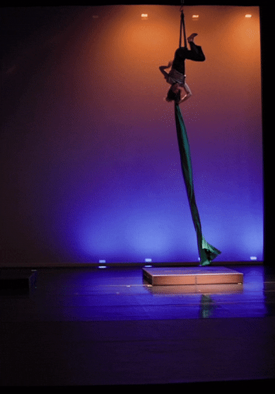

Falling Is My Favorite Hobby

About Me!
Hi, my name is Michael Warner. I'm a senior computer science major here at UT. I love rock climbing, snowboarding, aerial dance, and ballroom dance. A random skill I have is that I can unicycle. I work teaching STEM afterschool programs for elementary kids.
My goal for this semester is to build all of my projects without the use of generative AI. Most of my classes recently have pushed using AI so hard that I feel like I haven't built anything myself.
WebApps might I want to build this semester.
- A simple silly game like those on neal.fun
- Days since last incident page.
- Artificial Stupidity. Ask any question and get an incorrect response.
What I learned doing this assignment.
This assignment was a really good review for me. I haven't worked in html and css in 2 or 3 years. I also have never done much javascript so I'm excited to learn it. I refreshed on flexbox, media queries, and general css styling. Also I learn how to use an a button, and use js to change the the html attribute src on my image in order for it to change.
*I intend to not use AI for my assignments, and design is not my strong suit, so my pages won't be the prettiest. I will work to make my pages look good but they will largely be function over style.